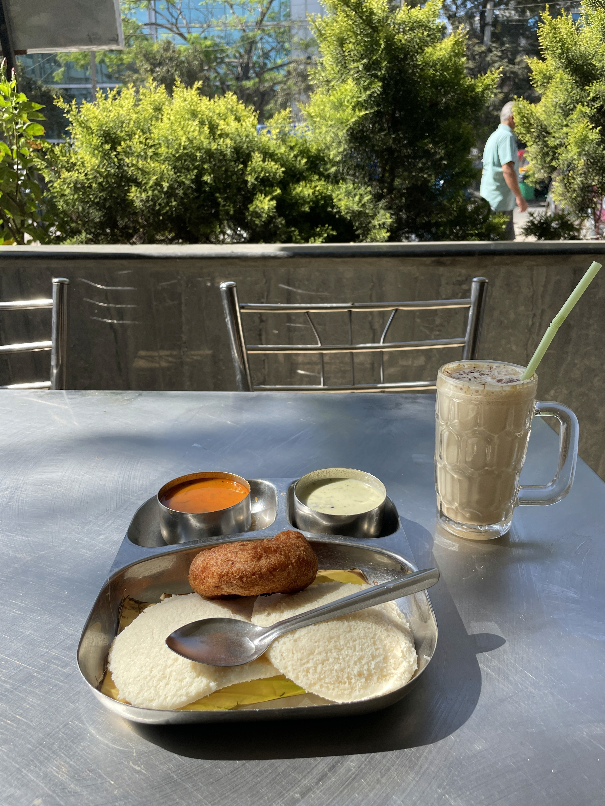
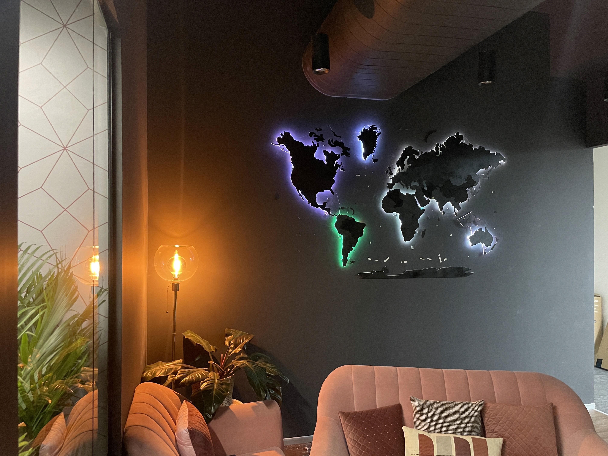

Old Habits, Die Hard
Penned on November 12, 2024.
What do you do after a bad day?
Every once in a while things go south and get too much to handle. A heartbreak, a bad meeting, an embarrassing encounter. (TODO: add Eg.)
Me? I tend to sleep them off. I call off all plans and instead choose to doze-off in the judgement-free embrace of my bed... postponing all my problems to the next day.
The coping mechanism for a day like this is to sleep it off, wake up early the next day and put in a couple of hours of pure, honest work. I find solace in this mundane routine.
A long shower, fresh clothes, and a peaceful scooty ride down the near-empty roads straight to office. The breeze doing wonders for my mood.
Just outside the building, I stop for my regular breakfast.. an idly vada combo, with small katoris of sambaar and coconut chutney + a cold coffee with one scoop of ice-cream blended in to wash it down.

But things felt different today, and I spend a solid 5min trying to pinpoint what.
The Vada? Perfectly salted. Idly? Exactly as powdery as I like it. Sambaar? a little too tangy for me, but it's always been. Coffee? refreshing as usual.
I look around the Cafe and spot the regulars, waving hello to some of them. I notice the chefs moving with the same machine-like gusto as they've been for the past year. I see the weighing machine showing a random number like it always does, lying unused all this while.
Everything seems to be in order. I'm just over-analyzing.
I mount my scooty and ride across to the office building, nodding at security on the way. He nods back. We've been doing this for months.
I circle around the building, go down the ramp into the parking lot. Completely deserted: no one's here yet. That's not strange, it's to be expected at this hour. I park at my usual spot and enter the lift.
A brief elevator ride followed by a short walk down the hall and I'm at my destination.
The Headout office. Warm, empty, welcoming. I'm the first one in, as anticipated.

My desk beckoned from across the hall and I walked over to settle down and unpack. Then plugged my laptop into the monitor and walked across to the pantry to grab a Munch — again, the usual.
Something feels off as I grab the Munch: a short wave of guilt washes over as if I'd just shoplifted something. And yet...? I trust my instinct and gingerly keep the Munch back. Maybe another time.
I walk back to my desk, still dazed from this oddity.
But oh well, it's time to power through some work. I crack my knuckles and take a deep breath.
I hit Cmd + Space.. type "Slack" and hit Enter in a few rapid keystrokes. And... nothing happens?
Odd.
I try again. And again, for good measure.
Is the WiFi working? Yup, connected just fine. So what....?
Then realization finally dawns... as do the first morning sun rays from the nearby window.
Slack isn't working because it's not installed on my laptop.
Things feel off because I'm not supposed to be here.
I'm not supposed to be here, because I'd left my job months ago.
I didn't work here anymore.
I'd just subconsciously walked into my old office, following a series of motions that I used to find comfort in.
As my head finally clears, the sun seems to widen it's smile. I smile back. How absent-minded had I been for this to happen? And that too entirely sober? No one would believe this.
I glance around "my" desk. The name next to the monitor read "Dvi". I wiped that off and scribbled "Nope, still Sid's" with a tongue emoji, knowing it would annoy her.
Time to get to work. This time opting for Discord instead of Slack, where my team-comms now lived. And I start responding to pings and emails I'd been procrastinating on and dreading replying to. Things on Figma looked great and my code in VS Code flew — I was locked in.
As I powered through a backlog that'd admittedly grown embarrassingly large over the past week, I noticed people starting to come in slowly and being their work days. The sun grew stronger and so did my resolve.
A couple of hours in, I realized I felt a lot better. Mission accomplished. Time to pack up and clear out, but not before grabbing a few Munches.
At the pantry I run into K, our office boy, setting up the coffee machine for the day. "Back to work?", he beams at me with the same enthusiasm as he's been all these months. "No, just here to steal some Munch", I say and grab some with a wink.
We share a laugh and then I'm off. Leaving one home-sweet-home behind for another.
Some things never change — and old habits die hard.